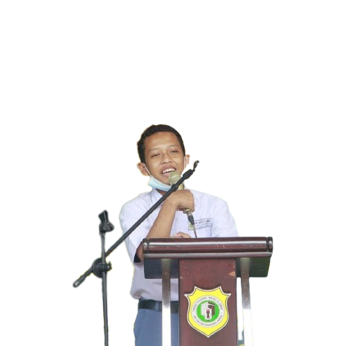

Fakta unik tentang saya
📌 Zodiak Leo
📌 Lahir 9 Agustus 2006
📌 Alamat Jl. Pangeran Diponegoro Rt.03 Rw.01 Desa Tracal-Karanggeneng-Lamongan
📌 Suka kelihatan SO COOL padahal COOL bangettttsss.....
Berkenalan dengan saya
Nama saya Muhammad Ibnu Rojab. Saya adalah anak pertama dari dua bersaudara. Saya lahir di Lamongan pada tanggal 9 Agustus 2006. Alamat rumah saya di Jalan Pangeran Diponegoro Rt.03 Rw.01 Desa Tracal Kecamatan Karanggeneng Kabupaten Lamongan.
Hobi saya adalah bermain GAME ONLINE. Tentu saja Karena GAME ONLINE sangat seru, Selain itu GAME ONLINE dapat melatih otak saya untuk berfikir, Karena bermain GAME ONLINE membutuhkan kerja otak utuk menyusun formasi dan strategi untuk menang. GAME ONLINE favorit saya adalah MOBILE LEGEND.
Selain itu saya juga suka film yang bergenre aksi seperti TRANSFORMERS, karena film TRANSFOREMERS memiliki tema robotic dan adegan perang yang sangat seru.
Makanan dan minuman favorit saya adalah nasi goreng dan es kelapa muda. Karena nasi goreng memiliki rasa yang gurih apalagi jika bau-nya harum. apalagijika ditambah es kelapa muda yang rasanya manis alami dan sealu membuat awet muda.
Biografi saya
Sejak masih bayi saya sudah dibawa bersama orang tua saya merantau ke Banten, lebih tepatnya Desa Talagasari Kecamatan Balaraja Kabupaten Tangerang provinsi Banten. Usia 4 tahun saya bersekolah di Tk Al-Ikhwan.
Kemudian setelah lulus saya meneruskan di SDN Talagasari 1 Balaraja. Uniknya disini saya sering dijadikan bahan contekan oleh teman-teman saya dikarenakan nilai saya selalu bagus. di SD mapel favorit saya adalah PAI (Pendidikan Agama Islam), sedangkan mapel yang paling saya tidak suka adalah Bahasa Sunda. Jadi, setiap ada pelajaran Bahasa Sunda nilai saya selalu jelek.
Pada saat kelas 4 saya diperintahkankan oleh guru untuk mewakili sekolah dalam mengikuti lomba cerdas cermat PAI antar sekolah tingkat kecamatan sayangnya tim saya kalah dalam babak penyisihan.
Kemudian pada saat kelas 5 saya kembali diperintahkan oleh guru untuk mengikuti cabang perlombaan yang sama, pada saat itu saya juga terpilih untuk mewakili sekolah dalam cabang perlombaan membaca puisi. Namun, saya tetap memilih cabang perlombaan cerdas cermat PAI. Ada sesi saat lomba cerdas cermat dimana tim saya menjawab semua habis pertanyaan yang diberikan oleh guru. Namun, sayangnya tim Saya kalah pada babak semi final.
Setelah lulus saya melanjutkan di MTs Darul Hikam Tracal. Dengan berat hati saya harus meninggalkan teman-teman saya di SD, karena orang tua saya pindah ke desa, sehingga mau tidak mau saya juga harus pindah sekolah ke desa.
Setelah saya lulus dari MTs saya melanjutkan sekolah ke MA Matholi'ul Anwar. Saya mendaftar sekolah kesini bersma 2 teman saya dan memilih jurusan yang sama yaitu MIPA TI, tetapi hanya saya yang masuk ke kelas MIPA TI sedangkan 2 teman saya masuk kekelas IPS.
Pada tanggal 1 Februari 2021 saya mengikuti lomba Stand Up Comedy karena tidak ada perwakilan dari kelas saya, jadi saya yang harus mengikuti lomba itu, hingga pada akhirnya saya mendapankan juara 2 dalam lomaba tersebut. Karena itu pula saya harus mengikuti lomba Stand Up Comedy mewakili asrama saya di pesantren pada acara MAWAR GOT TALENT hingga akhirnya mendapatkan juara 1.
Tidak berhenti sampai situ, dalam acara isra' mi'raj saya kembali harus naik ke mimbar untuk menampilkan Stand Up Comedy kembali.
Disini saya mengikuti bimbingan (Coding) yang didampingi oleh mas Ainul. Didalam kelas coding bersama beberapa kakak kelas TI dan 1 teman sekelas saya yang bernama Muhammad Alif Mujaddid. Ditingkat MA mata pelajaran favorit saya adalah TIK, itu yang menyebabkan saya berminat untuk mengikuti bimbingan coding.
Hubungi saya